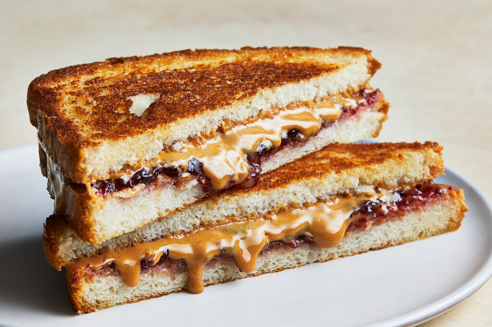

The Recipe
Making a peanut butter and jelly sandwich is one of the easiest and most delicious snacks you can prepare! This guide walks you through simple instructions and tips for the perfect sandwich.
What You'll Need
Ingredients
- 2 slices of bread
- Peanut butter
- Jelly
Tools
- A butter knife or spoon
- A plate for assembly
Step-by-Step Instructions
- Lay out the bread, peanut butter, jelly, and tools on your plate.
- Spread peanut butter evenly on one slice of bread.
- Spread jelly evenly on the second slice.
- Place the slices together with the peanut butter and jelly facing each other.
- Enjoy!
Tips for the Best PB&J
- Use toasted bread for extra crunch.
- Try adding banana slices for a fun twist.
- Experiment with almond butter or different jams.